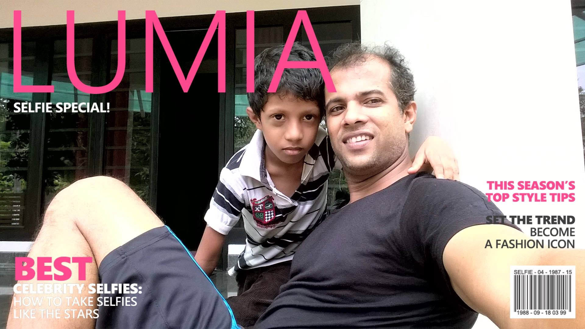

Abdu Nazeer
Full Stack Developer
Full Stack Developer
Core Competencies IT Project Management Technical Training and Mentorship IT Consultancy System and Network Administration Problem Solving and Troubleshooting Team Leadership and Collaboration Client Relationship Management Emerging Technologies Enhancing And Cost-efficient Strategy Panning Outsourcing Consultancy services
Full Stack Developer
Full Stack Developer
This is reserved hfkjshdkjfhskdhfkjs
Full Stack Developer
I am an Experienced IT professional with over 25 years in the field, specializing in electronic mechanics and information technology. Proven track record in managing complex IT projects, providing expert consultancy, and delivering technical training. Seeking a role that leverages my extensive experience to contribute to innovative solutions and mentor the next generation of IT professionals.